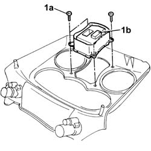

5505A24 w/l and service switch mount - r+r
- Path
- Procedures > 55 ELECTRICAL EQUIPMENT > 5505 ELECTRICAL CIRCUIT FOR INSTRUMENTS/INDICATORS > 5505A multi-function components > 5505A24 w/l and service switch mount - r+r
- Kind
- repair procedure (removal / refitting; the operation number is the code)
- Applies to
- all engines; all production periods
- Interactive page
- https://sloeber94.github.io/elrnDB-fDbl/en/#/2584876
Applies to: all engines; all production periods
 Removing
Removing
 Refitting
RefittingDisconnect the battery negative terminal.
Op. 7065C10 AIR CONDITIONING CONTROL PANEL - R+R
1. Undo the bolts (1a) and remove the support complete with switches (1b).

Applies to: all engines; all production periods
Refitting
RemovingFit the support complete with switches and secure it using the bolts.
Op. 7065C10 AIR CONDITIONING CONTROL PANEL - R+R
Connect the battery negative terminal.
Topics linked from this page (1)
Topics that link to this page (7)
- I10 DIRECTION INDICATORS / HAZARD WARNING LIGHTS / NOT WORKING
- I20 FOG LIGHTS NOT WORKING
- I21 REAR FOG LAMPS NOT WORKING
- J20 REARSCREEN AND DOOR MIRROR DEFROSTING NOT WORKING
- M01 ELECTRIC FRONT WINDOWS / NOT WORKING
- M02 ELECTRIC FRONT WINDOWS / NOT WORKING IN AUTOMATIC MODE
- 7035B52 heated rear window switch - r r